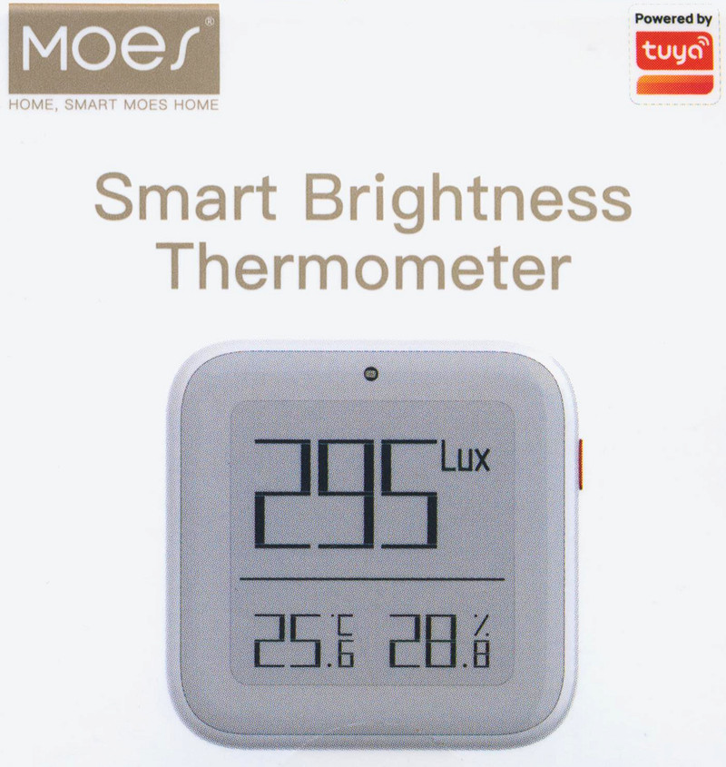
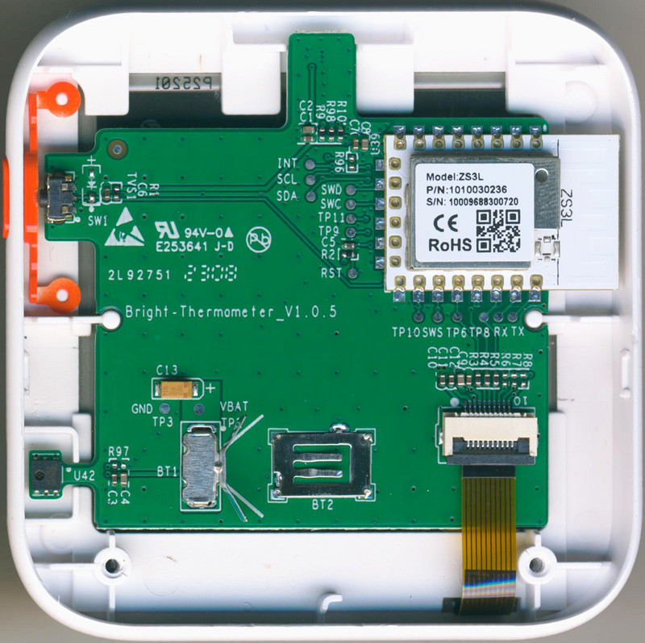
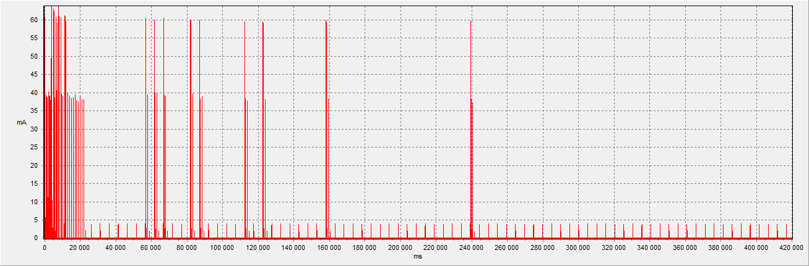
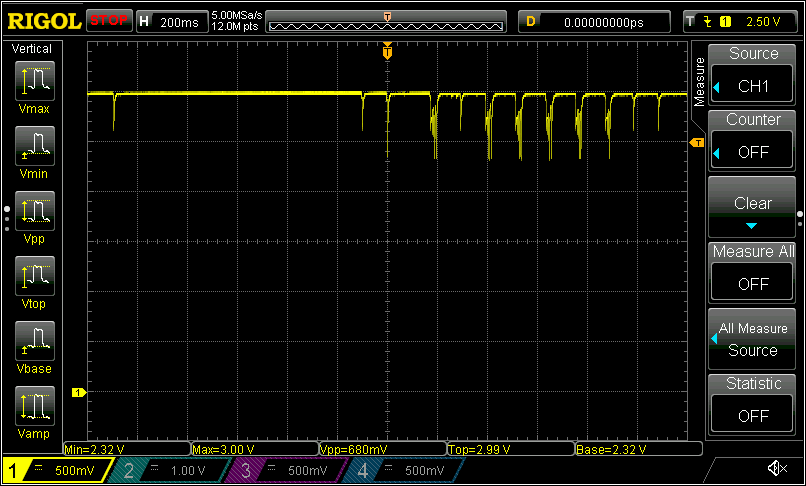

TS0222_TYZB01_kvwjujy9, Model: ZSS-ZK-THL, Moes ZigBee "Smart Brightness Thermometer"
Not recommended for purchase!
The
temperature and humidity sensor is not designed to be powered by a CR2032, as it requires a minimum supply voltage of 2.5V.
Without replacing the sensor, there is no point in making alternative firmware.

Module:
Tuya ZS3L (SoC: EFR32MG21A020F768IM32-B),
EPD: YMCE1031-0252AAAMFGN, TH Sensor:
CHT8305, Luminance Sensor: ?

Power consumption:
Switching on with re-registration in ZHA:

Average consumption - 84.4 uA for 420 seconds from 3.3 V. Sleep mode: 6.6 uA.
A strong excess of peak current is observed for CR2032 (!)
Voltage drop pulses on a CR2032 battery that has been running for 2 hours on a TS0222:

CHT8305 sensor supply voltage lower threshold specification violation (!)